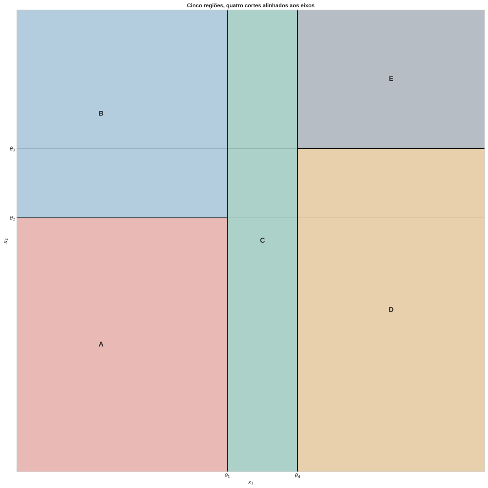
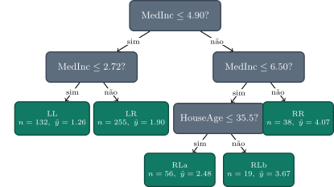
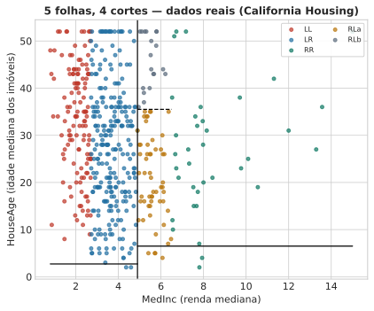
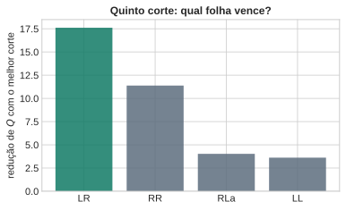

Árvores de Decisão — Particionamento Guloso
Aula 3 — Fundamentos Estatísticos do Aprendizado Supervisionado
1 Proposta da Aula
As Aulas 1 e 2 construíram uma família inteira de classificadores — gaussiano com covariância compartilhada, Naive Bayes — que compartilham uma escolha silenciosa: a forma da fronteira de decisão é fixada antes de qualquer dado ser observado. Se a suposição paramétrica é uma reta (ou um hiperplano), a fronteira será sempre uma reta, não importa o que os dados digam. Essa é a pergunta que abre a aula de hoje:
E se deixássemos os próprios dados decidirem a forma da fronteira, sem suposição paramétrica alguma?
A resposta é uma árvore de decisão: um modelo que particiona o espaço de entrada em regiões, guiado inteiramente pelos dados de treino, sem comprometer-se com nenhuma família de curvas antes de olhar para eles. A tentação é tratar essa ideia como pura heurística — “vá cortando o espaço até que fique homogêneo” — e é assim que a maioria dos cursos introduz o assunto. Esta aula argumenta o contrário: o critério que decide onde cortar é o mesmo princípio de máxima verossimilhança que já apareceu em cada aula deste curso, só que aplicado a um modelo diferente — não mais um modelo paramétrico fixo (uma reta, uma gaussiana), mas um modelo constante por partes, cuja forma nasce do próprio particionamento.
Três perguntas guiam o resto da aula:
- O que, exatamente, uma árvore está estimando?
- Por que a regra de “escolher o corte que reduz mais a impureza” é, por baixo do capô, uma maximização de verossimilhança?
- Que preço se paga por essa liberdade — e é sempre um bom negócio?
1.1 Pergunta
DicaSe uma árvore não fixa nenhuma família paramétrica antes de ver os dados, ela está livre de qualquer suposição estrutural sobre o problema?
Volte à proposta desta aula antes de responder: “deixar os dados decidirem a forma” é o mesmo que “não assumir nada”?
Dica
Julgue V ou F — a questão só conta se acertar os 4 itens:
- □ Como a árvore deixa a partição emergir dos dados, ela está livre de qualquer suposição estrutural sobre o problema — a única suposição do curso até agora estava do lado dos modelos paramétricos das Aulas 1–2.
- □ Se o critério de “corte que reduz mais a impureza” fosse mesmo uma heurística arbitrária, sem nenhuma conexão de verossimilhança por trás, ainda seria esperado, sem exigir explicação alguma, que ele coincidisse exatamente com o estimador de máxima verossimilhança para dois modelos probabilísticos diferentes (gaussiano e categórico) — como esta aula vai mostrar que coincide.
- □ No caso limite em que a família paramétrica escolhida nas Aulas 1–2 (por exemplo, gaussiana com covariância compartilhada) já é exatamente a forma verdadeira da fronteira, ainda haveria alguma vantagem, mesmo pequena, em usar uma árvore no lugar dela.
- □ Num problema de controle de qualidade industrial em que se sabe, por engenharia, que uma peça é defeituosa sempre que uma única medição de temperatura excede um limiar fixo já conhecido, há uma vantagem prática em ainda assim treinar uma árvore de decisão genérica em vez de simplesmente codificar essa regra conhecida.
2 Árvores Como Estimação Não-Paramétrica
Uma árvore de decisão parte o espaço de entrada \(\mathcal{X}\) em regiões retangulares, alinhadas aos eixos — cada corte fixa um limiar numa única variável. O resultado é uma coleção de regiões que, juntas, cobrem todo o espaço sem se sobrepor. Dentro de cada região, o modelo é o mais simples possível: uma constante. Em classificação, essa constante é a proporção (ou a classe majoritária) dos pontos de treino que caíram ali; em regressão, é a média dos alvos que caíram ali.
O processo de decidir, para um novo ponto \(\mathbf{x}\), a qual região ele pertence é sequencial: começa numa pergunta binária (“\(x_1 \le \theta_1\)?”), segue para a próxima pergunta dependendo da resposta, e assim por diante — exatamente a travessia de uma árvore binária, do nó raiz até uma folha.
A árvore por trás dessa partição é a travessia que gera essas cinco regiões, cada corte testando uma única variável contra um limiar:

NotaIsto não é um modelo probabilístico gráfico
Vale marcar essa fronteira de vocabulário desde já: uma árvore de decisão não representa uma distribuição de probabilidade conjunta com dependências entre variáveis, como as redes que aparecem em outras partes deste curso. Ela é, simplesmente, uma função — determinística, dado o treino — que mapeia \(\mathbf{x}\) para uma região, e a região para uma constante.
Note a inversão de papéis em relação às Aulas 1–2: lá, \(\mathbf{x}\) entrava numa fórmula fixa (gaussiana, produto de Bernoullis) cujos parâmetros eram estimados dos dados, mas cuja forma funcional era escolhida por nós, de antemão. Aqui, a própria forma — quantas regiões, onde ficam os cortes — é aprendida dos dados. Isso é, em sentido estrito, uma estimativa não-paramétrica de \(p(\mathcal{C}_k \mid \mathbf{x})\) (em classificação) ou de \(\mathbb{E}[t\mid\mathbf{x}]\) (em regressão): não-paramétrica não porque não haja números para ajustar, mas porque o número de “parâmetros” efetivos (quantas regiões, com que forma) cresce com os próprios dados, em vez de ser fixado a priori.
NotaModelos generativos vs. preditivos
Nas Aulas 1 e 2, o caminho até a decisão passava sempre pelo mesmo lugar: ajustar \(p(\mathbf{x}\mid\mathcal{C}_k)\) para cada classe (a densidade condicional), multiplicar pela priori \(\pi_k\), e obter a posteriori \(p(\mathcal{C}_k\mid\mathbf{x})\) pelo Teorema de Bayes. Chamamos esse caminho de modelo generativo: ele modela como os dados de cada classe são gerados, e a regra de decisão é uma consequência derivada desse modelo.
A árvore de decisão não faz isso. Em nenhum momento do procedimento existe uma densidade de \(\mathbf{x}\) — nem geral, nem por classe. Cada folha estima diretamente a proporção de cada classe entre os pontos que caíram ali, \(\hat p(\mathcal{C}_k \mid \mathbf{x}\in\mathcal{R}_\tau) = n_{\tau k}/N_\tau\): uma estimativa direta da posteriori, sem passar por uma densidade condicional de classe. É o primeiro modelo preditivo (ou discriminativo, em sentido amplo) do curso — ele aprende \(p(\mathcal{C}_k\mid\mathbf{x})\) (ou \(\mathbb{E}[t\mid \mathbf{x}]\), em regressão) diretamente, sem nunca modelar a distribuição de \(\mathbf{x}\) pelo caminho.
NotaParamétrico vs. não-paramétrico, mais formalmente
Um modelo é paramétrico quando é indexado por um vetor de parâmetros \(\theta \in \mathbb{R}^d\) de dimensão \(d\) fixa, escolhida antes de ver os dados e que não cresce com o tamanho da amostra \(N\). A gaussiana da Aula 1 (\(\theta=(\mu,\sigma^2)\), \(d=2\)) e o Naive Bayes da Aula 2 são exemplos: por maior que seja \(N\), o número de parâmetros ajustados continua o mesmo.
Um modelo é não-paramétrico quando sua complexidade efetiva — o número de graus de liberdade que de fato se ajustam aos dados — cresce com \(N\), em vez de ser fixada a priori. Numa árvore, esse papel é desempenhado pelo número de folhas: nada impede, em princípio, que uma árvore sem limite de profundidade continue crescendo à medida que mais dados chegam, criando mais regiões e mais constantes locais. “Não-paramétrico” não significa “sem parâmetro nenhum” — significa que o número de parâmetros não está fixado de antemão.
NotaVerossimilhança e o estimador de máxima verossimilhança (MLE)
Dado um modelo probabilístico \(p(\mathbf{x}\mid\theta)\) e uma amostra observada \(\mathcal{D}=\{\mathbf{x}_1,\dots,\mathbf{x}_N\}\) i.i.d., a função de verossimilhança é a mesma expressão da densidade conjunta, mas vista como função de \(\theta\) com os dados fixos: \[ L(\theta; \mathcal{D}) = p(\mathcal{D}\mid\theta) = \prod_{n=1}^N p(\mathbf{x}_n\mid\theta). \] Repare na inversão de papéis em relação a uma densidade comum: \(p(\mathbf{x}\mid\theta)\) varia \(\mathbf{x}\) com \(\theta\) fixo; \(L(\theta;\mathcal{D})\) varia \(\theta\) com os dados fixos. O estimador de máxima verossimilhança (MLE) é o valor de \(\theta\) que torna os dados observados os mais prováveis possível sob o modelo: \[ \hat\theta_{\text{MLE}} = \arg\max_\theta L(\theta;\mathcal{D}) = \arg\max_\theta \ln L(\theta;\mathcal{D}), \] usando o logaritmo (monótono crescente, não muda o \(\arg\max\)) para trocar produtório por somatório.
Exemplo canônico: a gaussiana. Para \(x_n \sim \mathcal{N}(\mu, \sigma^2)\) i.i.d., a log-verossimilhança é \(\ell(\mu,\sigma^2) = -\frac{N}{2}\ln(2\pi\sigma^2) - \frac{1}{2\sigma^2}\sum_n(x_n-\mu)^2\). Maximizando em \(\mu\) (com \(\sigma^2\) fixo) obtém-se \(\hat\mu_{\text{MLE}} = \bar{x}\), a média amostral; maximizando também em \(\sigma^2\) obtém-se \(\hat\sigma^2_{\text{MLE}} = \frac{1}{N}\sum_n(x_n-\bar x)^2\) — note o \(N\) no denominador, não \(N-1\): o MLE da variância é enviesado para baixo em amostras finitas, um fato que reaparece quando estimadores de covariância forem discutidos mais adiante no curso.
Este é exatamente o mecanismo que o próximo bloco usa para justificar a média como previsão de uma folha de regressão — e a Seção seguinte repete o mesmo argumento para uma folha de classificação, só que com uma verossimilhança categórica em vez de gaussiana.
Os próximos dois blocos tratam, em sequência, do critério que decide onde colocar cada corte — primeiro em regressão, onde a álgebra é mais simples e a conexão com verossimilhança aparece de forma direta; depois em classificação, onde a mesma lógica se veste de “impureza”.
2.1 Pergunta
DicaO que muda, na prática, entre “escolher uma família de curvas” e “deixar a partição emergir dos dados”?
Julgue V ou F — a questão só conta se acertar os 4 itens:
- □ No limite em que o número de pontos de treino tende a infinito, tanto um modelo paramétrico corretamente especificado quanto uma árvore convergem para a fronteira verdadeira — mas o modelo paramétrico, por ter menos a estimar, tende a precisar de menos dados para chegar perto dela.
- □ Se, em vez de uma família paramétrica de baixa dimensão, escolhêssemos uma família paramétrica muito flexível (por exemplo, um polinômio de grau altíssimo), a distinção entre “forma fixa” e “forma que emerge dos dados” desapareceria, já que ambas passam a se ajustar a quase qualquer formato.
- □ Num problema de previsão de safra agrícola em que a relação entre chuva e produtividade é conhecida por seguir aproximadamente uma curva em forma de sino, escolher uma família paramétrica que já capture esse formato (em vez de uma árvore) tende a exigir menos dados para um bom ajuste.
- □ Como uma árvore não assume nenhuma família paramétrica específica, conclui-se que ela nunca introduz nenhum viés sobre a forma da fronteira, ao contrário de um modelo paramétrico.
3 Árvores de Regressão: Verossimilhança Gaussiana
Comece pelo caso mais simples: um único alvo contínuo \(t\), e uma variável de entrada \(x\). Suponha que a partição do espaço já esteja dada — isto é, já sabemos quais pontos caem em qual região. A pergunta que sobra é: qual valor prever dentro de cada região?
NotaDuplo registro: intuição, depois formalismo
Intuição. Se você tem um monte de números e precisa escolher um só para representar todos eles, minimizando o erro quadrático total, o candidato óbvio é a média. É basicamente o que se faz ao “resumir” um conjunto de medições.
Formalismo. Isso não é só intuição — é a solução exata de um problema de otimização. Se \(\mathcal{R}_\tau\) é uma região (folha) com \(N_\tau\) pontos de treino e alvos \(t_n\), o valor \(y_\tau\) que minimiza a soma de quadrados \[ Q_\tau = \sum_{\mathbf{x}_n \in \mathcal{R}_\tau} (t_n - y_\tau)^2 \] é exatamente a média amostral, \[ y_\tau = \frac{1}{N_\tau} \sum_{\mathbf{x}_n \in \mathcal{R}_\tau} t_n . \] (Derivada de \(Q_\tau\) em relação a \(y_\tau\), igualada a zero — o mesmo argumento de mínimos quadrados de sempre.)
Até aqui, nada novo: “minimizar soma de quadrados” é a receita que todo mundo já usou. O ponto central deste bloco é outro: essa receita é, ela mesma, uma maximização de verossimilhança — e não por acaso, é a mesma equivalência entre mínimos quadrados e máxima verossimilhança que a Aula 5 vai formalizar para hiperplanos, aqui aplicada a um modelo bem mais simples: uma constante por folha.
Suponha que, dentro da folha \(\tau\), os alvos sigam um modelo gaussiano com média constante \(y_\tau\) e variância compartilhada \(\sigma^2\): \[ t_n \mid \mathbf{x}_n \in \mathcal{R}_\tau \;\sim\; \mathcal{N}(y_\tau, \sigma^2). \] A log-verossimilhança dos \(N_\tau\) pontos da folha, como função de \(y_\tau\) (com \(\sigma^2\) fixo), é \[ \ell_\tau(y_\tau) = -\frac{N_\tau}{2}\ln(2\pi\sigma^2) - \frac{1}{2\sigma^2} \sum_{\mathbf{x}_n \in \mathcal{R}_\tau} (t_n - y_\tau)^2 . \]
O caminho de \(\ell_\tau\) até \(Q_\tau\), passo a passo, sem pular nada:
- Isole o que depende de \(y_\tau\). O primeiro termo, \(-\frac{N_\tau}{2}\ln(2\pi\sigma^2)\), não contém \(y_\tau\) — é uma constante para efeito desta maximização (depende só de \(N_\tau\) e do \(\sigma^2\) fixado). Maximizar \(\ell_\tau(y_\tau)\) é, portanto, o mesmo que maximizar só o segundo termo: \[ \arg\max_{y_\tau} \ell_\tau(y_\tau) = \arg\max_{y_\tau} \left[-\frac{1}{2\sigma^2} \sum_{\mathbf{x}_n \in \mathcal{R}_\tau} (t_n - y_\tau)^2\right]. \]
- Troque o sinal. \(\frac{1}{2\sigma^2}\) é uma constante positiva. Maximizar \(-\frac{1}{2\sigma^2}\cdot(\text{algo})\) equivale a minimizar esse “algo” (multiplicar por um número negativo inverte quem é máximo e quem é mínimo). Logo: \[ \arg\max_{y_\tau} \ell_\tau(y_\tau) = \arg\min_{y_\tau} \sum_{\mathbf{x}_n \in \mathcal{R}_\tau} (t_n - y_\tau)^2 = \arg\min_{y_\tau} Q_\tau(y_\tau). \] Este é o elo central: maximizar a verossimilhança gaussiana e minimizar a soma de quadrados são, literalmente, o mesmo problema de otimização — não duas ideias parecidas, a mesma conta.
- Resolva o mínimo. Derive \(Q_\tau\) em relação a \(y_\tau\) e iguale a zero: \[ \frac{dQ_\tau}{dy_\tau} = -2\sum_{\mathbf{x}_n \in \mathcal{R}_\tau} (t_n - y_\tau) = 0 \;\Longrightarrow\; \sum_{\mathbf{x}_n \in \mathcal{R}_\tau} t_n = N_\tau\, y_\tau \;\Longrightarrow\; y_\tau = \frac{1}{N_\tau}\sum_{\mathbf{x}_n \in \mathcal{R}_\tau} t_n . \] A mesma média amostral do argumento puramente geométrico do início do bloco — só que agora chegamos lá partindo de uma suposição probabilística explícita sobre os dados, não de uma escolha arbitrária de função de perda.
A verificação abaixo confirma isso numericamente, com dados simulados: testamos vários candidatos para \(y_\tau\) e mostramos que o máximo da log-verossimilhança bate exatamente com a média amostral.
# Verificação: MLE gaussiano numa folha == minimizar soma de quadrados
t_folha = rng.normal(5.0, 2.0, size=15)
def loglik_gauss(t, y, sigma2):
N = len(t)
return -0.5 * N * np.log(2 * np.pi * sigma2) - np.sum((t - y) ** 2) / (2 * sigma2)
y_hat = t_folha.mean()
sigma2_fixo = t_folha.var()
candidatos = np.linspace(y_hat - 2, y_hat + 2, 9)
for y in candidatos:
marca = " <-- máximo" if np.isclose(y, y_hat, atol=0.3) else ""
print(f"y_tau={y:6.3f} loglik={loglik_gauss(t_folha, y, sigma2_fixo):8.3f}{marca}")
print(f"\nmédia amostral (y_hat) = {y_hat:.3f}")y_tau= 2.116 loglik= -39.336
y_tau= 2.616 loglik= -35.342
y_tau= 3.116 loglik= -32.490
y_tau= 3.616 loglik= -30.778
y_tau= 4.116 loglik= -30.207 <-- máximo
y_tau= 4.616 loglik= -30.778
y_tau= 5.116 loglik= -32.490
y_tau= 5.616 loglik= -35.342
y_tau= 6.116 loglik= -39.336
média amostral (y_hat) = 4.116O máximo da verossimilhança e a média amostral coincidem, como esperado: prever a média em cada folha não é uma convenção arbitrária — é o estimador de máxima verossimilhança sob um modelo gaussiano com variância compartilhada.
3.1 Crescimento guloso: busca exaustiva por variável e limiar
Se a partição do espaço já está dada, calcular o \(y_\tau\) ótimo em cada folha é trivial (é só tirar a média). O problema difícil é escolher a partição em si — quais variáveis cortar, com que limiares, em que ordem. Otimizar a estrutura inteira de uma árvore de uma só vez, mesmo com um número fixo de nós, é computacionalmente inviável: o número de estruturas possíveis explode combinatorialmente com o número de nós e de variáveis candidatas.
A saída prática é gulosa: comece com um único nó (toda a região de entrada), e cresça a árvore adicionando um par de folhas de cada vez. Para decidir o próximo corte, faça uma busca exaustiva sobre (a) qual variável cortar e (b) que limiar usar — para cada combinação candidata, calcule o \(Q_\tau\) resultante nas duas folhas geradas, e escolha a combinação que resulta no menor \(Q\) somado. A figura abaixo ilustra essa busca para uma única variável: percorrendo os candidatos a limiar, a soma de quadrados residual tem um mínimo bem definido.

Repare que essa busca é míope por construção: ela escolhe o corte que minimiza \(Q\) agora, sem olhar para o que esse corte habilita (ou impede) nos próximos níveis da árvore. O Bloco 4 volta a esse ponto.
Vamos agora crescer uma árvore de regressão de verdade sobre uma função mais complexa (uma senoide com ruído), variando o número de folhas permitido, para ver o que acontece quando a árvore cresce demais ou de menos.
3.2 Mais folhas, melhor ajuste — sempre em degraus

Com poucas folhas, a árvore mal acompanha a curva; com mais folhas, ela aproxima bem — mas nunca deixa de ser uma função em degraus, descontínua nos limiares. Guarde essa observação: ela volta, como limitação estrutural, no Bloco 5.
3.3 Pergunta
DicaSe duas folhas de uma árvore de regressão têm o mesmo número de pontos, a que tem maior soma de quadrados residuais \(Q_\tau\) tem, necessariamente, maior variância dos alvos dentro dela?
Julgue V ou F — a questão só conta se acertar os 4 itens:
- □ No limite em que duas folhas têm exatamente a mesma variância mas números de pontos muito diferentes (uma com 10 pontos, outra com 10.000), a folha maior terá, necessariamente, \(Q_\tau\) muito maior, mesmo com variância idêntica.
- □ Se, em vez de comparar duas folhas com o mesmo \(N_\tau\), comparássemos duas folhas com \(N_\tau\) diferentes, a folha de maior \(Q_\tau\) ainda teria, necessariamente, maior variância amostral.
- □ Ao comparar a dispersão de dois grupos de pacientes num estudo médico, um com 50 e outro com 500, a soma dos quadrados dos desvios (análoga a \(Q_\tau\)) não é uma métrica justa para comparar “quão dispersos” os grupos são, a menos que se normalize pelo tamanho de cada grupo.
- □ Como \(Q_\tau\) e a variância amostral \(\hat\sigma^2=Q_\tau/N_\tau\) diferem só por uma constante quando \(N_\tau\) é fixo, conclui-se que minimizar \(Q_\tau\) ao comparar candidatos de corte diferentes (que geram folhas de tamanhos diferentes) é equivalente a minimizar a variância média resultante.
3.4 O Algoritmo
Tudo o que vimos até aqui — a média como previsão de folha, o \(Q_\tau\) como critério, a busca exaustiva por um limiar — já é o suficiente para escrever o algoritmo por trás de qualquer árvore de regressão, por extenso:
Algoritmo — crescimento guloso de uma árvore de regressão
- Comece com uma única região \(\mathcal{R}_0\), contendo todos os pontos de treino.
- Enquanto houver folhas elegíveis para corte (respeitando um critério de parada, como profundidade máxima ou número mínimo de pontos por folha):
- Para cada folha atual \(\mathcal{R}\), e para cada variável \(x_j\), teste todo limiar candidato \(s\) (tipicamente, os pontos médios entre valores consecutivos de \(x_j\) observados em \(\mathcal{R}\)); calcule \(Q(\mathcal{R}, j, s) = \sum_{\mathcal{R}_{\text{esq}}}(t_n-\bar t_{\text{esq}})^2 + \sum_{\mathcal{R}_{\text{dir}}}(t_n-\bar t_{\text{dir}})^2\).
- Escolha, entre todas as combinações (folha, variável, limiar) testadas, a que minimiza \(Q\).
- Substitua essa folha por suas duas novas regiões.
- Pare quando nenhuma folha elegível reduzir \(Q\) o suficiente, ou quando o critério de parada for atingido.
O ponto que costuma passar despercebido no passo 2: a busca não é “escolha o próximo corte dentro desta folha” — é uma busca entre todas as folhas atuais ao mesmo tempo. A cada rodada, o algoritmo pergunta “de todos os cortes possíveis, em qualquer folha, qual reduz mais o erro total?”, e só então corta ali. Isso é o que torna o crescimento guloso: a decisão de qual folha aprofundar, e não só onde cortar dentro dela, também é míope — feita rodada a rodada, sem enxergar o que essa escolha habilita (ou impede) adiante.
Vamos ver isso em ação, num dataset real de regressão: California Housing (preço mediano de imóveis por região censitária, a partir de 8 atributos contínuos — o mesmo dataset já usado em optimization-linear-algebra para outro fim). Dois cuidados de tratamento, feitos explicitamente antes de qualquer ajuste:
- Usamos só a partição de treino já separada no dataset (16.640 regiões), e dela sorteamos uma amostra de 500 pontos — o bastante para a árvore ter uma forma interessante, pequeno o bastante para cada conta caber numa tabela que se lê numa tela.
- Para poder desenhar a partição em duas dimensões (e comparar diretamente com a figura de \(\theta_1,\dots,\theta_4\) do início do bloco anterior), restringimos a busca a duas das oito variáveis:
MedInc(renda mediana da região, em dezenas de milhares de dólares) eHouseAge(idade mediana dos imóveis, em anos). Uma árvore de produção buscaria sobre as oito; aqui a restrição é só didática, para manter a figura legível — o algoritmo em si não muda em nada.
# Carrega o dataset real (California Housing) — primeira vez nesta aula
from huggingface_hub.utils import logging as hf_logging
hf_logging.set_verbosity_error()
from datasets import disable_progress_bar
disable_progress_bar()
from datasets import load_dataset
_ch = load_dataset("gvlassis/california_housing")["train"].to_pandas()
amostra = _ch.sample(n=500, random_state=20260824).reset_index(drop=True)
NOMES_VAR = ["MedInc", "HouseAge"] # restrição didática: 2 das 8 variáveis
X_ch = amostra[NOMES_VAR].values
t_ch = amostra["MedHouseVal"].values # preço mediano, em $100 mil
MIN_POR_FOLHA = 10
def melhor_corte(idx):
"""Busca exaustiva do Algoritmo, passo 2a-2b, restrita a uma única folha."""
Xr, tr = X_ch[idx], t_ch[idx]
melhor = None
for j in range(len(NOMES_VAR)):
valores = np.unique(Xr[:, j])
limiares = (valores[:-1] + valores[1:]) / 2
for s in limiares:
esq = Xr[:, j] <= s
n_esq, n_dir = esq.sum(), (~esq).sum()
if n_esq < MIN_POR_FOLHA or n_dir < MIN_POR_FOLHA:
continue
te, td = tr[esq], tr[~esq]
q = np.sum((te - te.mean())**2) + np.sum((td - td.mean())**2)
if melhor is None or q < melhor[0]:
melhor = (q, j, s)
return melhor # (Q após o corte, índice da variável, limiar)
print(f"Amostra: N={len(t_ch)} pontos, variáveis={NOMES_VAR}")
print(f"Q da região inicial (raiz): {np.sum((t_ch - t_ch.mean())**2):.3f}")Amostra: N=500 pontos, variáveis=['MedInc', 'HouseAge']
Q da região inicial (raiz): 616.336O código acima é o algoritmo — não uma ilustração dele. melhor_corte implementa exatamente os passos 2a–2b para uma única região; o crescimento da árvore é só chamar essa função repetidamente, revisando todas as folhas abertas.
Split 1 (a raiz). A primeira chamada de melhor_corte sobre a região inteira:
raiz = np.arange(len(t_ch))
q1, j1, s1 = melhor_corte(raiz)
print(f"Melhor corte da raiz: {NOMES_VAR[j1]} <= {s1:.4f} (Q depois do corte: {q1:.3f})")Melhor corte da raiz: MedInc <= 4.8973 (Q depois do corte: 410.254)Esquerda (MedInc <= 4.90): n=387, média=1.679, Q=261.555
Direita (MedInc > 4.90): n=113, média=3.214, Q=148.700Splits 2 e 3 (os dois filhos da raiz, “o nível de baixo”). Em vez de escolher qual dos dois aprofundar primeiro, vamos cortar os dois — exatamente o passo 2 do algoritmo aplicado, em sequência, às duas folhas que acabaram de nascer:
q2, j2, s2 = melhor_corte(idxL) # melhor corte do filho esquerdo
q3, j3, s3 = melhor_corte(idxR) # melhor corte do filho direito
print(f"Melhor corte de 'esquerda': {NOMES_VAR[j2]} <= {s2:.4f}")
print(f"Melhor corte de 'direita': {NOMES_VAR[j3]} <= {s3:.4f}")Melhor corte de 'esquerda': MedInc <= 2.7162
Melhor corte de 'direita': MedInc <= 6.5004LL: n=132, média=1.255, Q=42.094
LR: n=255, média=1.899, Q=183.423
RL: n= 75, média=2.782, Q=71.747
RR: n= 38, média=4.067, Q=35.302Depois dessas três chamadas, a árvore tem 4 folhas (LL, LR, RL, RR) — uma na raiz, duas no nível de baixo. Falta a quarta chamada do enunciado: mais um corte, num nível abaixo desse. O algoritmo não escolhe isso arbitrariamente — ele testa melhor_corte nas quatro folhas atuais e compara a redução de \(Q\) que cada uma ofereceria:
for nome, idx in folhas4.items():
q_antes = resumo(idx)["Q"]
q_depois, j, s = melhor_corte(idx)
print(f"{nome}: Q_antes={q_antes:7.3f} melhor corte={NOMES_VAR[j]}<= {s:.4f}"
f" Q_depois={q_depois:7.3f} reducao={q_antes-q_depois:7.3f}")LL: Q_antes= 42.094 melhor corte=MedInc<= 1.7662 Q_depois= 38.476 reducao= 3.618
LR: Q_antes=183.423 melhor corte=HouseAge<= 40.5000 Q_depois=165.814 reducao= 17.608
RL: Q_antes= 71.747 melhor corte=HouseAge<= 35.5000 Q_depois= 51.701 reducao= 20.045
RR: Q_antes= 35.302 melhor corte=MedInc<= 9.7356 Q_depois= 23.920 reducao= 11.382A folha RL vence — sua redução de \(Q\) (\({\approx}20{,}0\)) é quase o dobro da segunda colocada. É ali, e só ali, que o algoritmo corta na quarta rodada:
q4, j4, s4 = melhor_corte(idxRL)
print(f"Split 4 (folha 'RL'): {NOMES_VAR[j4]} <= {s4:.4f}")Split 4 (folha 'RL'): HouseAge <= 35.5000LL: n=132, média=1.255, Q=42.094
LR: n=255, média=1.899, Q=183.423
RR: n= 38, média=4.067, Q=35.302
RLa: n= 56, média=2.481, Q=28.514
RLb: n= 19, média=3.670, Q=23.187Chegamos exatamente à forma pedida: um corte na raiz, os dois filhos cortados, e mais um corte no nível seguinte — 5 folhas, 4 cortes. A árvore e a partição do plano ficam assim:


O quinto corte. Com 5 folhas abertas, o algoritmo repete o mesmo passo: testar melhor_corte em cada uma, e cortar onde a redução de \(Q\) for maior.
for nome, idx in folhas5.items():
resultado = melhor_corte(idx)
q_antes = resumo(idx)["Q"]
if resultado is None:
print(f"{nome}: sem corte válido (menos de {2*MIN_POR_FOLHA} pontos)")
continue
q_depois, j, s = resultado
print(f"{nome}: Q_antes={q_antes:7.3f} melhor corte={NOMES_VAR[j]}<= {s:.4f}"
f" Q_depois={q_depois:7.3f} reducao={q_antes-q_depois:7.3f}")LL: Q_antes= 42.094 melhor corte=MedInc<= 1.7662 Q_depois= 38.476 reducao= 3.618
LR: Q_antes=183.423 melhor corte=HouseAge<= 40.5000 Q_depois=165.814 reducao= 17.608
RR: Q_antes= 35.302 melhor corte=MedInc<= 9.7356 Q_depois= 23.920 reducao= 11.382
RLa: Q_antes= 28.514 melhor corte=MedInc<= 5.5890 Q_depois= 24.486 reducao= 4.028
RLb: sem corte válido (menos de 20 pontos)
Vencedora: 'LR' — é ali que o quinto corte acontece.RLb, com só 19 pontos, nem entra na disputa — não sobram \(2\times 10\) pontos para dividir. Entre as quatro folhas restantes, LR vence com folga: tem o maior \(Q\) inicial (é a folha mais numerosa, com 255 pontos) e ainda comporta uma redução grande, cortando por HouseAge. O quinto corte não acontece na folha mais “carente” (a de maior \(Q\) resolveria a raiz de novo, por exemplo) nem na mais recém-criada — acontece onde a conta aponta o maior ganho, e só aí.
Essa é a mecânica completa por trás de cada divisão de uma árvore, do primeiro corte ao centésimo: nenhuma delas é definida por regra alguma que não seja “teste tudo, meça \(Q\), escolha o menor”. As seções seguintes trocam a variável contínua \(t\) por uma variável categórica — o algoritmo continua sendo o mesmo; só o critério de comparação entre um corte e outro muda de soma de quadrados para impureza.
3.5 Pergunta
DicaPor que o algoritmo escolhe cortar a folha
LR no quinto passo, e não a folha com o maior \(Q\) atual, nem a que acabou de nascer no quarto corte?
Escreva sua resposta e compare com um colega antes de avançar (2 min).
Dica
Julgue V ou F — a questão só conta se acertar os 4 itens:
- □ Se o critério fosse “sempre aprofundar a folha com mais pontos”, o quarto corte (a divisão de
RL) não teria acontecido, poisLL(132 pontos) eLR(255 pontos) tinham mais pontos do queRL(113 pontos). - □ Se
RLbtivesse exatamente \(2\times\text{MIN\_POR\_FOLHA}\) pontos no total, isso já garantiria a existência de um limiar candidato válido para cortá-la. - □ Se a busca do quinto corte considerasse as 8 variáveis originais do California Housing em vez de só 2, a redução de \(Q\) do vencedor jamais poderia ser menor do que a observada com 2 variáveis.
- □ Como
LRtinha o maior \(Q\) inicial entre as cinco folhas e também venceu, conclui-se que, em geral, escolher a folha de maior \(Q\) atual é equivalente a escolher a de maior redução possível.
4 Teoria da Informação: Medindo Probabilidade
Nas Aulas 1 e 2 construímos um vocabulário para relações entre variáveis aleatórias — conjunta \(p(x,y)\), condicional \(p(x\mid y)\), marginal \(p(x)\), independência (\(p(x,y)=p(x)p(y)\)), independência condicional. Esse vocabulário é qualitativo: diz que tipo de relação existe, mas não dá um número para “o quanto”. Duas perguntas ficaram sem resposta quantitativa: quanto uma distribuição é incerta? E quanto duas variáveis se afastam de ser independentes?
Teoria da informação responde as duas com a mesma ideia central: medir probabilidade em unidades de incerteza. É essa régua que a árvore de classificação vai usar, no bloco seguinte, para decidir onde cortar. Três perguntas guiam este bloco:
- O que significa, formalmente, “uma distribuição é incerta”?
- Quanto de incerteza sobre uma variável sobra depois de observar outra?
- Como resumir, num único número, o quanto duas variáveis se afastam da independência?
4.1 Entropia: Quanto uma Distribuição Surpreende
Comece por um único resultado \(x\) de uma variável aleatória \(X\). Quanto mais improvável ele é, mais ele “surpreende” ao ser observado. Defina a surpresa (ou informação) de um resultado como
\[ s(x) = -\ln p(x). \]
Um evento certo (\(p=1\)) tem surpresa \(0\): não há nada a aprender ao observar o que já se sabia que ia acontecer. Um evento raro (\(p\to 0\)) tem surpresa arbitrariamente grande. A entropia de \(X\) é a surpresa média, ponderada pela própria distribuição — quanto, em expectativa, você aprende ao observar um valor de \(X\):
\[ H(X) = \mathbb{E}[s(X)] = -\sum_x p(x)\ln p(x). \]
(Usamos logaritmo natural, medindo incerteza em nats — a mesma convenção que o Bloco 4 vai usar para a entropia de uma folha. A formulação clássica de Shannon usa \(\log_2\), medindo em bits; a única diferença é a escala, \(\ln 2 \approx 0{,}693\) vezes menor em nats — nenhuma propriedade qualitativa muda com a base.)
\(H(X)=0\) quando \(X\) é determinística (\(p(x)=1\) para um único valor); é máxima quando \(X\) é uniforme — a incerteza é maior quando nenhum resultado é favorecido. Para uma variável binária com \(p(X{=}1)=p\),
def H(p):
"""Entropia (nats) de uma Bernoulli(p)."""
if p in (0, 1):
return 0.0
return -(p * np.log(p) + (1 - p) * np.log(1 - p))
for p in [0.001, 0.10, 0.30, 0.50, 0.70, 0.90, 0.999]:
print(f"p={p:.3f} H(p)={H(p):.4f} nats")p=0.001 H(p)=0.0079 nats
p=0.100 H(p)=0.3251 nats
p=0.300 H(p)=0.6109 nats
p=0.500 H(p)=0.6931 nats
p=0.700 H(p)=0.6109 nats
p=0.900 H(p)=0.3251 nats
p=0.999 H(p)=0.0079 natsA entropia cresce à medida que \(p\) se aproxima de \(0{,}5\) (máxima incerteza sobre o resultado de uma moeda honesta, \(H(0{,}5)=\ln 2 \approx 0{,}693\) nats) e cai a zero nas bordas (resultado praticamente certo). Essa é a mesma curva côncava que vai reaparecer no Bloco 4, agora medindo a incerteza sobre a classe de um ponto numa folha — o vocabulário é idêntico, só a variável \(X\) muda de “um resultado genérico” para “a classe \(\mathcal{C}_k\)”.
4.2 Entropia Condicional: o que Sobra Depois de Observar
A entropia de uma única variável generaliza para um par \((X,Y)\): a entropia conjunta \(H(X,Y) = -\sum_{x,y} p(x,y)\ln p(x,y)\) mede a incerteza sobre o par inteiro. A pergunta mais interessante, porém, é outra: dado que já observei \(X\), quanta incerteza ainda resta sobre \(Y\)? Essa é a entropia condicional,
\[ H(Y\mid X) = \sum_x p(x)\, H(Y\mid X{=}x) = -\sum_{x,y} p(x,y)\ln p(y\mid x). \]
Ela obedece à regra da cadeia da entropia — o análogo, em incerteza, da regra do produto de probabilidades (\(p(x,y)=p(x)p(y\mid x)\)) que já vimos na Aula 1:
\[ H(X,Y) = H(X) + H(Y\mid X). \]
A leitura: a incerteza sobre o par se decompõe em “incerteza sobre \(X\)” mais “incerteza que sobra sobre \(Y\), uma vez que \(X\) é conhecido”.
Por que independência implica \(H(Y\mid X) = H(Y)\), passo a passo. Não é só intuição de que “conhecer \(X\) não ajuda” — sai direto da definição:
- Independência (Aula 2) diz que \(p(y\mid x) = p(y)\) para todo \(x,y\): a distribuição condicional de \(Y\) dado \(X{=}x\) é, literalmente, a mesma distribuição para qualquer \(x\) — não muda com \(x\).
- A entropia condicional num ponto fixo, \(H(Y\mid X{=}x) = -\sum_y p(y\mid x)\ln p(y\mid x)\), depende só dessa distribuição. Como ela não muda com \(x\) (passo 1), \(H(Y\mid X{=}x) = H(Y)\) para todo \(x\) — a mesma entropia, qualquer que seja o valor observado de \(X\).
- Substituindo na definição de entropia condicional: \[ H(Y\mid X) = \sum_x p(x)\, H(Y\mid X{=}x) = \sum_x p(x)\, H(Y) = H(Y) \underbrace{\sum_x p(x)}_{=\,1} = H(Y), \] onde o último passo usa só a normalização da marginal de \(X\).
Ou seja: \(H(Y\mid X)\) é uma média ponderada de \(H(Y\mid X{=}x)\) ao longo de \(x\); se todos os termos dessa média já valem \(H(Y)\) (passo 2), a média inteira também vale \(H(Y)\) — não há nada mais sutil por trás. No outro extremo, se \(Y\) é uma função determinística de \(X\), \(H(Y\mid X{=}x)=0\) para todo \(x\) (dado \(x\), \(Y\) fica sabido com certeza), então \(H(Y\mid X)=0\) pelo mesmo argumento: observar \(X\) elimina toda a incerteza sobre \(Y\).
4.3 Informação Mútua
Combine as duas ideias acima: \(H(Y)\) é a incerteza original sobre \(Y\); \(H(Y\mid X)\) é o que sobra depois de observar \(X\). A diferença é quanto observar \(X\) reduziu a incerteza sobre \(Y\) — isso é a informação mútua:
\[ I(X;Y) = H(Y) - H(Y\mid X) = H(X) - H(X\mid Y) = \sum_{x,y} p(x,y)\,\ln\frac{p(x,y)}{p(x)\,p(y)}. \]
(As três expressões são iguais — é só álgebra a partir da regra da cadeia acima; a simetria \(I(X;Y)=I(Y;X)\) não é óbvia à primeira vista, mas cai direto dela.) A terceira forma é a que conecta diretamente à Aula 2: o termo dentro do logaritmo é exatamente a razão entre a conjunta verdadeira e a conjunta que existiria se \(X,Y\) fossem independentes (\(p(x)p(y)\)). Segue que
\[ I(X;Y) = 0 \iff p(x,y) = p(x)\,p(y) \text{ para todo } x,y \iff X, Y \text{ são independentes.} \]
Ou seja: independência (Aula 2) é exatamente o caso \(I(X;Y)=0\), e a informação mútua é a régua que mede, em nats, o quanto uma conjunta observada se afasta desse caso. (Também vale \(I(X;Y)\geq 0\) sempre — informação mútua nunca é negativa; a prova usa a desigualdade de Jensen sobre a concavidade do logaritmo e não é reproduzida aqui, mas o fato é usado livremente a partir de agora.)
NotaPor que “distância até a independência” e não literalmente uma distância
\(I(X;Y)\) tem a forma de uma divergência de Kullback-Leibler, \(D_{KL}\big(p(x,y)\,\|\,p(x)p(y)\big)\) — uma medida de quão diferente uma distribuição é de outra. Como toda KL, ela não é simétrica em suas duas entradas nem satisfaz a desigualdade triangular, então “distância” aqui é uma metáfora, não uma métrica no sentido formal. O que se mantém da metáfora: \(I=0\) só quando as duas distribuições coincidem (a conjunta real e a conjunta sob independência), e \(I\) cresce conforme elas se afastam.
4.4 O Ganho de Informação da Aula 2 é Informação Mútua
Vamos quantificar o próprio exemplo da Aula 2. Duas palavras de um e-mail, “grátis” (\(G\)) e “ganhador” (\(W\)), eram condicionalmente independentes dada a classe (\(\mathcal{C}=\text{spam}\) ou \(\text{ham}\), \(\pi_{\text{spam}}=0{,}5\)), com
\[ p(G{=}1\mid\text{spam})=0{,}85,\quad p(W{=}1\mid\text{spam})=0{,}60, \qquad p(G{=}1\mid\text{ham})=0{,}03,\quad p(W{=}1\mid\text{ham})=0{,}02. \]
Naquela aula, comparamos só a célula \((1,1)\): marginalizando a classe, \(p(G{=}1,W{=}1)=0{,}255\) contra \(p(G{=}1)\,p(W{=}1)=0{,}136\) se fossem independentes — evidência de que \(G\) e \(W\) são marginalmente dependentes, apesar de condicionalmente independentes dada a classe. Agora podemos ir além de uma célula e medir a dependência inteira, em nats, com \(I(G;W)\):
pi_spam = 0.5
pG_spam, pW_spam = 0.85, 0.60
pG_ham, pW_ham = 0.03, 0.02
def conjunta_dado_classe(pg, pw):
return {(1,1): pg*pw, (1,0): pg*(1-pw), (0,1): (1-pg)*pw, (0,0): (1-pg)*(1-pw)}
j_spam = conjunta_dado_classe(pG_spam, pW_spam)
j_ham = conjunta_dado_classe(pG_ham, pW_ham)
conjunta = {k: pi_spam*j_spam[k] + (1-pi_spam)*j_ham[k] for k in j_spam}
pG1 = conjunta[(1,1)] + conjunta[(1,0)]
pW1 = conjunta[(1,1)] + conjunta[(0,1)]
def H_lista(ps):
return -sum(p*np.log(p) for p in ps if p > 0)
H_G, H_W = H_lista([pG1, 1-pG1]), H_lista([pW1, 1-pW1])
H_GW = H_lista(conjunta.values())
I_GW = H_G + H_W - H_GW
print(f"conjunta p(G,W) = { {k: round(v,4) for k,v in conjunta.items()} }")
print(f"p(G=1)={pG1:.3f} p(W=1)={pW1:.3f} (produto se independentes: {pG1*pW1:.4f})")
print(f"H(G)={H_G:.4f} H(W)={H_W:.4f} H(G,W)={H_GW:.4f} (nats)")
print(f"I(G;W) = H(G)+H(W)-H(G,W) = {I_GW:.4f} nats (> 0: confirma a dependência marginal)")conjunta p(G,W) = {(1, 1): 0.2553, (1, 0): 0.1847, (0, 1): 0.0547, (0, 0): 0.5053}
p(G=1)=0.440 p(W=1)=0.310 (produto se independentes: 0.1364)
H(G)=0.6859 H(W)=0.6191 H(G,W)=1.1644 (nats)
I(G;W) = H(G)+H(W)-H(G,W) = 0.1406 nats (> 0: confirma a dependência marginal)\(I(G;W)\approx 0{,}14\) nats confirma, com um único número, o que a Aula 2 já mostrava célula a célula: as duas palavras não são marginalmente independentes. Mas a pergunta mais relevante para uma árvore de decisão é outra — não “\(G\) e \(W\) dependem uma da outra?”, e sim “\(G\) e \(W\) dizem algo sobre a classe?”. É essa a pergunta que \(I(G;\mathcal{C})\) e \(I(W;\mathcal{C})\) respondem:
4.5 Quem Diz Mais Sobre a Classe?
H_G_dado_C = pi_spam*H_lista([pG_spam, 1-pG_spam]) + (1-pi_spam)*H_lista([pG_ham, 1-pG_ham])
H_W_dado_C = pi_spam*H_lista([pW_spam, 1-pW_spam]) + (1-pi_spam)*H_lista([pW_ham, 1-pW_ham])
I_G_C = H_G - H_G_dado_C
I_W_C = H_W - H_W_dado_C
print(f"I(G;C) = H(G) - H(G|C) = {I_G_C:.4f} nats")
print(f"I(W;C) = H(W) - H(W|C) = {I_W_C:.4f} nats")I(G;C) = H(G) - H(G|C) = 0.4072 nats
I(W;C) = H(W) - H(W|C) = 0.2336 nats
\(I(G;\mathcal{C})\approx 0{,}41\) nats é quase o dobro de \(I(W;\mathcal{C})\approx 0{,}23\) nats: “grátis” reduz mais a incerteza sobre spam/ham do que “ganhador” — apesar de \(W\) ter, sozinha, menos entropia própria (\(H(W) < H(G)\), ela já é mais previsível de saída). É exatamente esse tipo de comparação — quanto uma variável candidata reduz a incerteza sobre a classe — que o próximo bloco usa para escolher onde uma árvore de classificação corta: o critério tradicionalmente chamado de ganho de informação é, sem disfarce, \(I(\text{variável de corte}\,;\,\text{classe})\), calculado localmente dentro de cada nó.
4.6 Pergunta
DicaSe uma variável candidata a corte tem entropia própria \(H(X)\) baixa (ela já é bem previsível), isso garante que ela também é pouco informativa sobre a classe, \(I(X;\mathcal{C})\) baixo?
Pense no exemplo de “ganhador” antes de responder.
DicaJulgue V ou F — a questão só conta se acertar os 4 itens:
- □ \(I(X;\mathcal{C})\) nunca pode ser maior que \(H(X)\), porque não é possível reduzir mais incerteza sobre a classe do que a própria variável carrega.
- □ Ter \(H(X)\) baixo garante \(I(X;\mathcal{C})\) baixo, já que uma variável pouco incerta não tem “espaço” para informar muito.
- □ No exemplo de “grátis” e “ganhador”, \(H(W) < H(G)\) e ainda assim \(I(W;\mathcal{C}) < I(G;\mathcal{C})\) — a variável de entropia menor também informou menos sobre a classe, mas isso é coincidência do exemplo, não uma implicação geral.
- □ \(I(X;\mathcal{C})=0\) é compatível com \(H(X)\) alto — por exemplo, se \(X\) for uniforme e completamente independente da classe.
5 Árvores de Classificação: Verossimilhança Categórica, Entropia e Gini
Em classificação, a folha não prevê um número — prevê uma distribuição sobre classes. Dentro da folha \(\tau\), com \(N_\tau\) pontos de treino, seja \(n_{\tau k}\) a contagem de pontos da classe \(k\). O modelo mais simples possível para essas contagens é categórico, com parâmetro \(p_{\tau k}\) (a probabilidade de um ponto da folha pertencer à classe \(k\)). A pergunta é a mesma do bloco anterior, só que para uma distribuição categórica: qual \(p_{\tau k}\) maximiza a verossimilhança dos dados observados na folha?
# Verificação: MLE categórico numa folha == proporção empírica
contagens = [7, 3] # 7 pontos de uma classe, 3 de outra, numa folha
N_tau = sum(contagens)
def loglik_categorica(contagens, p):
n = np.array(contagens, dtype=float)
return np.sum(n * np.log(p))
p_hat = np.array(contagens) / N_tau
candidatos_p = [p_hat, [0.5, 0.5], [0.9, 0.1], [0.6, 0.4], [0.75, 0.25]]
for p in candidatos_p:
p = np.array(p)
print(f"p={p} loglik={loglik_categorica(contagens, p):.4f}")
print(f"\nproporção empírica (p_hat) = {p_hat}")p=[0.7 0.3] loglik=-6.1086
p=[0.5 0.5] loglik=-6.9315
p=[0.9 0.1] loglik=-7.6453
p=[0.6 0.4] loglik=-6.3247
p=[0.75 0.25] loglik=-6.1727
proporção empírica (p_hat) = [0.7 0.3]De novo, o máximo bate exatamente com a proporção empírica \(\hat p_{\tau k} = n_{\tau k}/N_\tau\) — o mesmo padrão do Bloco 2, agora para uma distribuição categórica em vez de gaussiana. A verificação numérica confirma o resultado, mas não mostra por que ele é verdadeiro — a derivação abaixo fecha essa lacuna, do mesmo jeito explícito usado no Bloco 2 para a média.
Suponha que, dentro da folha \(\tau\), a classe de cada ponto seja sorteada de forma i.i.d. de uma distribuição categórica com parâmetro \(p_\tau=(p_{\tau 1},\dots,p_{\tau K})\), sujeito a \(\sum_k p_{\tau k}=1\) (é um vetor de probabilidades, não \(K\) números livres): \[ y_n \mid \mathbf{x}_n\in\mathcal{R}_\tau \;\sim\; \text{Categórica}(p_\tau), \qquad n=1,\dots,N_\tau . \] Cada ponto de classe \(k\) contribui um fator \(p_{\tau k}\) para a verossimilhança; agrupando os \(n_{\tau k}\) pontos de cada classe, a log-verossimilhança da folha, como função de \(p_\tau\), é \[ \ell_\tau(p_\tau) = \sum_{n=1}^{N_\tau} \ln p_{\tau,\, y_n} = \sum_k n_{\tau k} \ln p_{\tau k} . \]
O caminho de \(\ell_\tau\) até \(\hat p_{\tau k}\), passo a passo, sem pular nada:
- Identifique a restrição. \(p_\tau\) não pode ser maximizado livremente coordenada a coordenada — é um vetor de probabilidades, então \(\sum_k p_{\tau k}=1\) é uma restrição que qualquer máximo precisa respeitar.
- Monte o Lagrangiano. Para maximizar \(\ell_\tau(p_\tau)\) sujeito a essa restrição, introduza um multiplicador \(\lambda\): \[ \mathcal{L}(p_\tau,\lambda) = \sum_k n_{\tau k}\ln p_{\tau k} + \lambda\Big(1-\sum_k p_{\tau k}\Big). \]
- Derive em relação a cada \(p_{\tau k}\) e iguale a zero. \[ \frac{\partial \mathcal{L}}{\partial p_{\tau k}} = \frac{n_{\tau k}}{p_{\tau k}} - \lambda = 0 \;\Longrightarrow\; p_{\tau k} = \frac{n_{\tau k}}{\lambda} . \] Isso já mostra que o máximo é proporcional à contagem \(n_{\tau k}\) — falta só fixar a constante de proporcionalidade \(1/\lambda\).
- Use a restrição para achar \(\lambda\). Substituindo \(p_{\tau k}=n_{\tau k}/\lambda\) em \(\sum_k p_{\tau k}=1\): \[ \sum_k \frac{n_{\tau k}}{\lambda} = \frac{N_\tau}{\lambda} = 1 \;\Longrightarrow\; \lambda = N_\tau, \] e portanto \[ \hat p_{\tau k} = \frac{n_{\tau k}}{N_\tau} , \] exatamente a proporção empírica que a verificação numérica já confirmou — agora com a álgebra completa por trás.
- Substitua \(\hat p_\tau\) de volta na log-verossimilhança. Usando \(n_{\tau k}=N_\tau\hat p_{\tau k}\) (passo 4): \[ \ell_\tau(\hat p_\tau) = \sum_k n_{\tau k}\ln \hat p_{\tau k} = \sum_k N_\tau \hat p_{\tau k}\ln \hat p_{\tau k} = N_\tau \sum_k \hat p_{\tau k}\ln \hat p_{\tau k} = -N_\tau\, H(\hat p_\tau), \] onde \(H(p)=-\sum_k p_k\ln p_k\) é a entropia da distribuição de classes na folha (convenção padrão, com o sinal negativo) — o último passo é só a definição de \(H\) aplicada a \(\hat p_\tau\), com o sinal trocado por causa do \(-\sum\) da definição.
ImportanteA conexão central da aula: impureza é log-verossimilhança de perfil
A derivação acima mostra, sem atalho, que \[ \textbf{maximizar a log-verossimilhança} \;\equiv\; \textbf{minimizar a entropia da folha.} \]
É exatamente esse o critério mais comum para decidir onde cortar uma árvore de classificação — só que costuma ser apresentado como “reduzir a impureza”, sem que a conexão com verossimilhança seja mencionada. Ela é a mesma equivalência do Bloco 2 (mínimos quadrados = MLE gaussiano), agora do lado categórico: lá, a restrição vinha de derivar \(Q_\tau\) direto; aqui, veio de um Lagrangiano, porque \(p_\tau\) vive num simplex, não em \(\mathbb{R}^K\) livre — mas o padrão “log-verossimilhança maximizada tem uma forma fechada e reconhecível” é o mesmo.
O Bloco 4 (Teoria da Informação) já adiantou a peça que falta: a entropia \(H(\hat p_\tau)\) de uma folha é a mesma entropia \(H(X)\) definida ali, só que aplicada à variável “classe de um ponto sorteado da folha”. Isso permite escrever, com precisão, o que significa “reduzir a impureza ao cortar” — não é uma analogia, é a mesma informação mútua de novo. Para um candidato de corte \(s\) no nó \(\tau\), que separa os \(N_\tau\) pontos em \(N_{\text{esq}}\) à esquerda e \(N_{\text{dir}}\) à direita, o ganho de informação é
\[ IG(\tau, s) = H(\hat p_\tau) - \left[\frac{N_{\text{esq}}}{N_\tau} H(\hat p_{\text{esq}}) + \frac{N_{\text{dir}}}{N_\tau} H(\hat p_{\text{dir}})\right]. \]
Compare com a definição de informação mútua do Bloco 4, \(I(X;Y) = H(Y) - H(Y\mid X)\): o termo entre colchetes acima é exatamente \(H(\mathcal{C}\mid S)\), a entropia condicional da classe dado o indicador de lado do corte \(S\in\{\text{esq},\text{dir}\}\), calculada empiricamente nos \(N_\tau\) pontos do nó. Logo
\[ IG(\tau, s) = I(S ; \mathcal{C}), \]
a informação mútua entre “qual lado do corte \(s\)” e a classe, localmente, dentro do nó \(\tau\). A busca gulosa dos Blocos 2–3 — “teste toda variável e limiar, escolha o que reduz mais o erro” — em classificação é, sem nenhuma metáfora, “teste toda variável e limiar, escolha o que maximiza a informação mútua com a classe”. É por isso que esse critério tem o nome que tem.
5.1 Entropia e Gini: mesmo formato
A entropia tem a forma que se espera de uma medida de incerteza:

O índice de Gini, \(G(p) = \sum_k p_{\tau k}(1-p_{\tau k})\), tem uma interpretação própria, diferente da conexão com verossimilhança: é a probabilidade de errar ao classificar um ponto sorteado da folha usando um segundo rótulo, também sorteado independentemente segundo as mesmas proporções \(p_\tau\) — um classificador aleatório “ingênuo”. Não é um estimador de máxima verossimilhança de forma tão direta quanto a entropia, mas compartilha o mesmo formato geral (zero nas bordas, máximo em \(p=0{,}5\)) e é computacionalmente mais barato (sem logaritmo).
AvisoAviso de leitura
Uma formulação comum de “cross-entropy” para árvores é escrita, em algumas fontes, sem o sinal negativo — \(\sum_k p_{\tau k}\ln p_{\tau k}\) — e ainda assim descrita em prosa como tendo “máximo em \(p=0{,}5\)”. Isso só é consistente se o sinal negativo padrão da entropia estiver implícito: a fórmula sem o sinal tem, na verdade, mínimo (mais negativo) em \(p=0{,}5\), e vale \(0\) nas bordas — o oposto. Usamos aqui a convenção padrão (com o sinal), que é a única consistente com “impureza aumenta com incerteza” e com o gráfico acima.
5.2 Um contraexemplo deliberado: por que não usar a taxa de erro bruta?
A alternativa mais óbvia a entropia e Gini seria a taxa de erro de classificação em si — a fração de pontos mal classificados na folha, se prevermos sempre a classe majoritária. Ela é simples e intuitiva. O próximo exemplo mostra por que ela é uma escolha ruim para crescer a árvore, mesmo sendo aceitável para podar.
DicaDiagnóstico: dois splits, qual você prefere?
Um nó com 400 pontos de cada classe (800 no total) pode ser dividido de duas formas:
- Split 1: folha esquerda com (300, 100), folha direita com (100,
- — ambas com 400 pontos.
- Split 2: folha esquerda com (400, 200) — 600 pontos —, folha direita pura, com (0, 200) — 200 pontos.
Antes de calcular: você acha que as duas opções têm a mesma qualidade, olhando só a taxa de erro de classificação?
def gini_idx(contagens):
n = sum(contagens)
p = contagens[0] / n
return 2 * p * (1 - p)
def entropia_idx(contagens):
n = sum(contagens)
ps = [c / n for c in contagens if c > 0]
return -sum(p * np.log(p) for p in ps)
def erro_classificacao(contagens):
n = sum(contagens)
return 1 - max(contagens) / n
def medida_ponderada(medida, esq, dir_):
n_esq, n_dir = sum(esq), sum(dir_)
n = n_esq + n_dir
return (n_esq * medida(esq) + n_dir * medida(dir_)) / n
pai = (400, 400)
split1 = ((300, 100), (100, 300))
split2 = ((400, 200), (0, 200))
H_pai, G_pai = entropia_idx(pai), gini_idx(pai)
print(f"Nó pai: entropia={H_pai:.4f} gini={G_pai:.4f}\n")
for nome, (esq, dir_) in [("Split 1", split1), ("Split 2", split2)]:
h_filhos = medida_ponderada(entropia_idx, esq, dir_)
g_filhos = medida_ponderada(gini_idx, esq, dir_)
print(f"{nome}: erro={medida_ponderada(erro_classificacao, esq, dir_):.4f} "
f"gini={g_filhos:.4f} (ganho={G_pai-g_filhos:.4f}) "
f"entropia={h_filhos:.4f} (IG={H_pai-h_filhos:.4f})")Nó pai: entropia=0.6931 gini=0.5000
Split 1: erro=0.2500 gini=0.3750 (ganho=0.1250) entropia=0.5623 (IG=0.1308)
Split 2: erro=0.2500 gini=0.3333 (ganho=0.1667) entropia=0.4774 (IG=0.2158)As duas opções têm exatamente a mesma taxa de erro de classificação ponderada (\(0{,}25\)) — a métrica bruta é cega para a diferença entre elas. Mas Gini e entropia preferem o Split 2 (valores menores nos filhos, ganhos maiores): \(IG(\text{Split 2})\approx0{,}216\) nats contra \(IG(\text{Split 1})\approx0{,}131\) nats — o Split 2 é o que mais reduz a incerteza sobre a classe, exatamente o que a Seção anterior definiu como informação mútua entre o corte e a classe. (A mesma leitura de “ganho” vale para o índice de Gini, mas ali é só uma diferença de impureza — a igualdade com informação mútua é uma propriedade só da entropia.) Ele produz uma folha perfeitamente pura, o que a taxa de erro bruta simplesmente não enxerga, porque só olha quem “ganha a maioria”, não o quão desequilibrada é essa maioria.
Isso explica a assimetria de uso: entropia e Gini são diferenciáveis e mais sensíveis à distribuição interna da folha, por isso são preferidas para crescer a árvore (o critério de otimização se beneficia de gradientes bem-comportados); a taxa de erro bruta, mais grosseira, é geralmente reservada para a fase de poda — assunto do próximo bloco.
DicaJulgue V ou F: entropia, Gini e taxa de erro para crescer/podar árvores
Julgue V ou F — a questão só conta se acertar os 4 itens:
- □ Se todas as decisões de corte usassem a taxa de erro bruta como critério de crescimento, o Split 2 do contraexemplo desta aula (folha direita pura) não teria vantagem alguma sobre o Split 1.
- □ No limite em que uma folha tem uma única classe presente, o ganho de informação de um corte que produz duas folhas puras é igual à própria entropia do nó pai.
- □ Num conjunto de diagnóstico médico com 95% de pacientes saudáveis e 5% doentes, o nó representando toda a base já tem entropia baixa mesmo sem nenhum corte, simplesmente pela composição das classes.
- □ Como Gini e entropia têm o mesmo formato geral (zero nas bordas, máximo em \(p=0{,}5\)), qualquer corte preferido pela entropia é necessariamente também preferido pelo Gini.
6 Custo vs. Complexidade: a Poda de Árvores
Todo modelo dos últimos blocos foi ajustado do mesmo jeito: cresça (ou ajuste) até que ele explique o treino o melhor possível. Isso é, em geral, uma péssima ideia — um modelo com liberdade suficiente (uma árvore sem limite de folhas é o exemplo mais literal) consegue reduzir o erro de treino a praticamente zero, memorizando peculiaridades daquela amostra específica em vez de captar o padrão que se repetiria em dados novos. O que se quer não é o modelo que erra menos no treino, é o que erra menos em dados que ele não viu. Essa tensão — entre o quanto um modelo se ajusta ao que já foi visto e o quanto ele generaliza — é o tema deste bloco, e reaparece, com nomes diferentes, em praticamente todo o resto do curso (regularização, seleção de modelo, o vício-variância da Aula 4). Em árvores, o nome que essa tensão ganha é custo-complexidade, e existem dois grandes grupos de mecanismo para enfrentá-la: limitar o crescimento enquanto a árvore é construída (os critérios de parada abaixo) ou deixá-la crescer livre e cortar de volta depois (a poda, o resto deste bloco).
6.1 Critérios de Parada: Regularizar Enquanto a Árvore Cresce
Antes de chegar à poda, vale nomear a forma mais direta — e mais usada na prática — de limitar uma árvore: um punhado de hiperparâmetros que restringem o crescimento nó a nó, à medida que o algoritmo guloso do Bloco 2 decide cada corte. Cada um limita um aspecto diferente da complexidade \(|T|\) que aparece na fórmula de custo-complexidade abaixo — só que como uma restrição rígida, decidida antes de ver o resultado, em vez de uma penalidade suave decidida depois:
- Altura máxima (
max_depth): limita quantos cortes sucessivos separam a raiz de qualquer folha — ou seja, quantas perguntas a árvore pode fazer sobre um único ponto antes de decidir. - Número mínimo de amostras por folha (
min_samples_leaf): impede que uma folha final tenha poucos pontos — sem esse limite, a árvore pode literalmente criar uma folha por ponto (overfitting no extremo), e cada estimativa \(\hat\mu_\tau\) ou \(\hat p_{\tau k}\) passa a ter uma base amostral mínima garantida. - Número mínimo de amostras para tentar um corte (
min_samples_split): parecido, mas verificado antes de tentar dividir um nó — se o nó já tem poucos pontos, o algoritmo nem chega a avaliar candidatos a corte ali. - Número máximo de folhas (
max_leaf_nodes): limita diretamente \(|T|\) — o mesmo termo de complexidade da fórmula de custo-complexidade a seguir, só que como teto fixo em vez de penalidade. - Ganho mínimo de impureza para aceitar um corte (
min_impurity_decrease): só aceita um corte se ele reduzir a impureza por pelo menos um valor fixo — é exatamente o critério “pare quando o próximo corte não ajudar muito” que o parágrafo a seguir mostra ser traiçoeiro.
Todos esses critérios agem durante a construção, olhando só a decisão local de cada nó — por isso são chamados de pré-poda (pre-pruning), em contraste com a poda propriamente dita (post-pruning), que primeiro deixa a árvore crescer por completo e só depois decide o que cortar. O restante deste bloco mostra por que esse segundo caminho, mais caro computacionalmente, resolve um problema que nenhum critério de parada consegue resolver por conta própria — a miopia da busca gulosa:
O Bloco 2 já registrou uma faceta do problema: a busca gulosa decide cada corte olhando só o ganho imediato. Isso tem uma consequência prática incômoda para o último critério da lista acima (min_impurity_decrease) — empiricamente, é comum que nenhum dos cortes disponíveis produza uma redução significativa de erro, e ainda assim, algumas divisões depois, uma redução substancial apareça. Um critério de parada baseado só em “pare quando o próximo corte não ajudar muito” cortaria a árvore cedo demais, perdendo esses ganhos adiados — e o mesmo vale, em menor grau, para qualquer um dos outros critérios: um teto fixo (max_depth, max_leaf_nodes, …) é o mesmo valor para toda a árvore, mesmo que um ramo se beneficiasse de mais profundidade e outro, de menos.
A prática recomendada inverte a lógica: cresça uma árvore grande (baseada só no número de pontos por folha, sem se preocupar com overfitting), e depois pode de volta. A poda é guiada por um critério de custo-complexidade que soma o erro residual de todas as folhas (o custo, no sentido de quão mal a árvore se ajusta ao próprio treino) a uma penalidade proporcional ao número de folhas (a complexidade, no sentido de quantos graus de liberdade a árvore usa): \[ C(T) = \underbrace{\sum_{\tau=1}^{|T|} Q_\tau(T)}_{\text{custo}} + \underbrace{\lambda |T|}_{\text{complexidade}} . \] O parâmetro \(\lambda \ge 0\) controla o trade-off: \(\lambda=0\) não pena nada (a árvore completa, sem poda, sempre “vence” — puro custo, zero penalidade de complexidade); \(\lambda\) grande pena fortemente árvores complexas, empurrando a poda para árvores bem menores. Não existe um \(\lambda\) “correto” universal — o valor certo depende de quanto ruído há nos dados e de quantos pontos se tem para estimar cada folha, e por isso é escolhido empiricamente, não derivado de teoria.
NotaO que é um conjunto de validação, e por que separar os dados
Até aqui, “treino” significava simplesmente “os dados usados para ajustar o modelo” — a média de uma folha, a proporção de classes, o próprio corte escolhido, tudo veio do treino. A partir deste bloco, precisamos de uma segunda fatia de dados com um papel bem diferente: o conjunto de validação, reservado desde o início e nunca usado para ajustar nada (nem um corte, nem a estimativa de uma folha) — só para medir, depois que a árvore já está pronta, o quão bem ela se sai.
A razão para separar os dois não é burocracia, é estatística: medir o erro de um modelo nos mesmos dados usados para ajustá-lo é uma estimativa otimista — inflada — do quão bem ele generaliza. O caso extremo é a própria árvore completa deste bloco: ela pode chegar a \(100\%\) de acerto no treino (uma folha por ponto, se preciso), o que não diz nada sobre o desempenho em um dado novo. O conjunto de validação, por nunca ter influenciado o ajuste, dá uma estimativa honesta do erro de generalização — é o mesmo raciocínio que a Aula 4 desta disciplina generaliza para a escolha de qualquer hiperparâmetro de complexidade, não só o \(\lambda\) de poda de uma árvore.
O que fazemos abaixo é a versão mais simples possível dessa ideia: uma única divisão treino/validação, \(60\%/40\%\), sorteada uma vez. Essa simplicidade tem um custo que só será tratado com o devido cuidado na Aula 4 (Validação Cruzada e Bootstrap): uma única divisão desperdiça dados (os \(40\%\) de validação não ajudam a ajustar a árvore) e a estimativa de erro resultante depende de qual divisão específica saiu no sorteio — trocar a semente aleatória desloca um pouco onde cai o “melhor” \(\lambda\). A Aula 4 resolve os dois problemas reamostrando repetidamente, em vez de dividir uma única vez.
6.2 Poda em ação

Árvore completa: 39 folhas
Melhor lambda (validação): 0.0104 -> 10 folhasO padrão é o mesmo que reaparece, formalizado, na Aula 4: a acurácia de treino só piora conforme \(\lambda\) cresce e a árvore encolhe (menos capacidade de memorizar o próprio treino) — mas a acurácia de validação tem um ponto ótimo no meio, nem a árvore completa (overfitting) nem a árvore excessivamente podada (underfitting).
6.3 Pergunta
DicaPor que “pare quando o próximo corte não reduzir muito o erro” é uma estratégia de parada ruim?
Julgue V ou F — a questão só conta se acertar os 4 itens:
- □ No limite em que todo corte candidato, em qualquer nível, sempre reduz o erro por uma quantidade pequena mas positiva, um critério de “pare quando a redução for menor que um limiar fixo” eventualmente para a árvore, mesmo que cortes futuros muito bons ainda estivessem disponíveis mais adiante.
- □ Se o critério de parada, em vez de olhar só o próximo corte, pudesse olhar dois níveis à frente (checando se algum neto de um corte candidato produz uma redução grande, mesmo que o corte imediato não produza), esse critério ainda sofreria do mesmo tipo de miopia, só que adiada por um nível.
- □ Num algoritmo de busca em jogos como xadrez, um jogador que só avalia a qualidade imediata de cada lance pode recusar um sacrifício de peça que parece ruim agora mas abre caminho para xeque-mate poucas jogadas depois — o mesmo tipo de miopia do critério de parada por corte único.
- □ Como crescer a árvore por completo e depois podar evita a miopia do critério de parada por corte único, conclui-se que a árvore completa, antes da poda, já é a estrutura ótima entre todas as árvores possíveis com aquele número final de folhas.
7 Limites das Árvores
A mesma liberdade que permite a uma árvore capturar qualquer fronteira — sem suposição paramétrica — cobra um preço em três frentes distintas. Vamos ver cada uma com um exemplo concreto, não só em abstrato.
7.1 Splits alinhados aos eixos podem ser muito subótimos
Toda fronteira de uma árvore é uma sequência de cortes paralelos aos eixos. Isso é ótimo quando a fronteira “verdadeira” também é alinhada aos eixos — e pode ser péssimo quando não é. O caso mais claro é exatamente aquele que a Aula 2 tratou como o caso fácil: duas classes gaussianas com covariância compartilhada e correlacionada, cuja fronteira ótima é uma única reta, não alinhada aos eixos.

Mesmo com 8 níveis de profundidade, a árvore aproxima a reta diagonal com uma escadinha de cortes horizontais e verticais — nunca alcança a reta em si, e precisa de folhas cada vez mais numerosas para chegar perto. A gaussiana da Aula 2 resolve o mesmo problema com uma única direção, porque sua forma paramétrica já é adequada a esse tipo de fronteira. É o espelho exato do argumento de abertura desta aula: a forma fixa é ótima quando acerta o formato certo, e a árvore é ótima quando não se sabe (ou não se quer assumir) qual é esse formato.
7.2 Instabilidade: pequenas mudanças, árvores bem diferentes
Uma segunda limitação, menos visível numa figura só, é que a estrutura aprendida é sensível a detalhes do conjunto de treino — remover ou adicionar poucos pontos pode mudar qual variável e qual limiar são escolhidos logo no primeiro corte (o corte da raiz, que reverbera por toda a árvore abaixo dele).
X_inst, y_inst = X_diag.copy(), y_diag.copy()
arv_original = DecisionTreeClassifier(max_depth=2, random_state=0)
arv_original.fit(X_inst, y_inst)
# Remove 5 pontos específicos (uma perturbação pequena, ~1% dos dados).
# Gerador local e com seed própria (não o `rng` global desta aula): a
# demonstração precisa de uma amostra de 5 pontos específica que desloque
# o corte, e prender isso ao estado do `rng` global a tornaria frágil a
# qualquer mudança em chunks anteriores.
rng_perturbacao = np.random.default_rng(241)
idx_remover = rng_perturbacao.choice(len(X_inst), size=5, replace=False)
mascara = np.ones(len(X_inst), dtype=bool)
mascara[idx_remover] = False
arv_perturbada = DecisionTreeClassifier(max_depth=2, random_state=0)
arv_perturbada.fit(X_inst[mascara], y_inst[mascara])
def descreve_raiz(arvore):
var = arvore.tree_.feature[0]
limiar = arvore.tree_.threshold[0]
return f"x_{var+1} <= {limiar:.3f}"
print("Corte da raiz, árvore original: ", descreve_raiz(arv_original))
print("Corte da raiz, com 5 pontos a menos:", descreve_raiz(arv_perturbada))Corte da raiz, árvore original: x_2 <= 0.014
Corte da raiz, com 5 pontos a menos: x_2 <= -0.113Remover só 5 pontos (\(1\%\) da amostra) já desloca o limiar do corte da raiz de \(0{,}014\) para \(-0{,}113\) — a mesma variável \(x_2\) ainda vence, mas o ponto de corte se move o suficiente para redesenhar as duas regiões de forma perceptível. Dependendo de quais pontos especificamente saem, uma perturbação desse tamanho pode até trocar qual variável entra primeiro no corte da raiz — não é preciso um exemplo extremo para isso acontecer, só um sorteio específico de poucos pontos. Nada disso aconteceria com um ajuste de mínimos quadrados, cujo hiperplano se move suavemente com pequenas mudanças nos dados. Esta é exatamente a instabilidade que, mais adiante no curso (Aula 9, Ensemble Theory), deixa de ser só uma fraqueza: é o ingrediente que torna o bagging — a média de muitas árvores levemente diferentes — eficaz.
7.3 Partição rígida: previsões descontínuas
A terceira limitação já apareceu no Bloco 2, na figura da senoide: cada ponto do espaço pertence a exatamente uma folha, e a previsão salta no limiar entre duas folhas vizinhas. Isso é neutro em classificação (uma fronteira sempre existe em algum lugar), mas é particularmente ruim em regressão, quando o alvo verdadeiro é uma função suave — a árvore produz descontinuidades exatamente onde a função verdadeira não tem nenhuma.
DicaO que fica desta aula
Nenhum dos dois extremos — fronteira sempre linear (Aulas 1–2) ou totalmente livre (árvores) — é gratuito. A forma fixa é barata e estável, mas erra sistematicamente quando o formato certo não é o assumido; a árvore acerta qualquer formato, mas paga em instabilidade e miopia gulosa. A pergunta que abre a Aula 4 é: como escolher, de forma sistemática (não por tentativa e erro), o tanto de complexidade certo para um problema — seja o \(\lambda\) de poda de uma árvore, seja qualquer outro hiperparâmetro de complexidade?
Retomando as perguntas de abertura
- O que uma árvore está estimando? Uma função constante por partes — de \(p(\mathbf{x}\mid\mathcal{C}_k)\) ou de \(\mathbb{E}[t\mid\mathbf{x}]\) —, cuja própria forma (não só seus parâmetros) vem dos dados.
- Por que “reduzir a impureza” é maximizar verossimilhança? Porque a proporção empírica de classes numa folha é o MLE categórico, e maximizar essa log-verossimilhança é, algebricamente, minimizar a entropia — o mesmo argumento que já valia para a média (MLE gaussiano) em regressão.
- Que preço se paga pela liberdade? Splits alinhados aos eixos podem ser muito subótimos, a estrutura aprendida é instável a pequenas mudanças no treino, e a partição é rígida — produzindo descontinuidades que uma função suave não tem.
Ponte para a Aula 4
Toda árvore precisa de uma escolha de complexidade — quantas folhas, que \(\lambda\) de poda — e essa escolha, até aqui, foi feita “olhando o gráfico” de uma divisão treino/validação específica. A Aula 4 formaliza esse procedimento: valida por reamostragem (cross-validation), trata o erro de validação como uma estimativa estatística de uma quantidade não observável (o erro de generalização), e usa o Bootstrap para quantificar a incerteza dessa estimativa.
DicaJulgue V ou F: limites estruturais das árvores
Julgue V ou F — a questão só conta se acertar os 4 itens:
- □ No limite em que a profundidade máxima não é limitada e há pelo menos um ponto de treino distinto por folha, o erro de treino de uma árvore de classificação tende a zero, independentemente de quão complexa seja a verdadeira fronteira de decisão.
- □ Se as 500 amostras do exemplo do California Housing fossem substituídas por outra amostra, sorteada com outra semente aleatória, o corte escolhido para a raiz poderia mudar, mesmo mantendo as mesmas duas variáveis candidatas.
- □ Numa aplicação de visão computacional em que cada variável de entrada é um pixel, uma árvore de cortes alinhados aos eixos enfrentaria a mesma limitação de aproximar só em degraus fronteiras não alinhadas a pixels individuais.
- □ Como instabilidade estrutural e partição rígida vêm do mesmo processo de ajuste guloso, uma regra de desempate determinística para cortes quase empatados eliminaria também a rigidez da partição e suas descontinuidades.
8 Exercícios
8.1 Questões discursivas
Explique, com suas próprias palavras, por que dizer “a árvore escolhe o corte que reduz mais a impureza” é equivalente a dizer “a árvore escolhe o corte que maximiza a log-verossimilhança dos dados na folha”. Sua explicação deve mencionar tanto o caso de regressão quanto o de classificação.
Construa (ou descreva) um par de splits de um nó de classificação com a mesma taxa de erro de classificação ponderada, mas com Gini ou entropia diferentes — diferente do exemplo usado na aula. Explique por que isso acontece.
Um colega propõe usar apenas a taxa de erro de classificação (não Gini nem entropia) tanto para crescer quanto para podar uma árvore. Argumente por que essa escolha é razoável para podar, mas problemática para crescer.
8.2 Questões de Verdadeiro/Falso
Cada bloco de 4 itens trata do mesmo tema. A questão só é considerada correta se todos os 4 itens forem julgados corretamente (deixar em branco tem penalidade de 20% da nota da questão).
8.3 Aviso
As questões de Verdadeiro/Falso e discursivas ficam sem solução neste arquivo — são para resolução autônoma do aluno, fora do horário de aula.